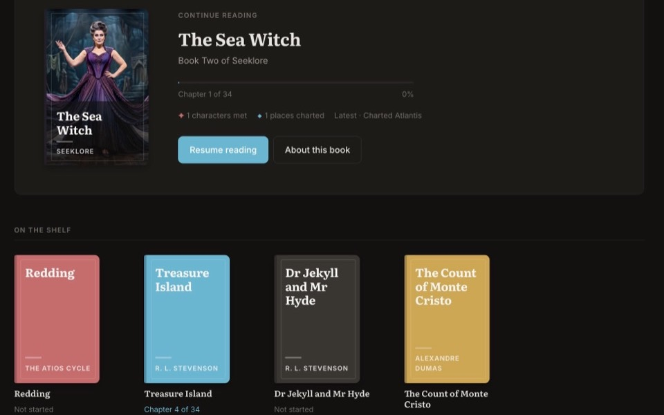
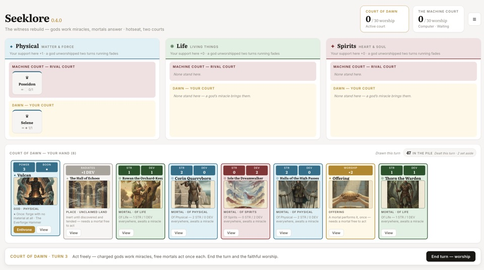
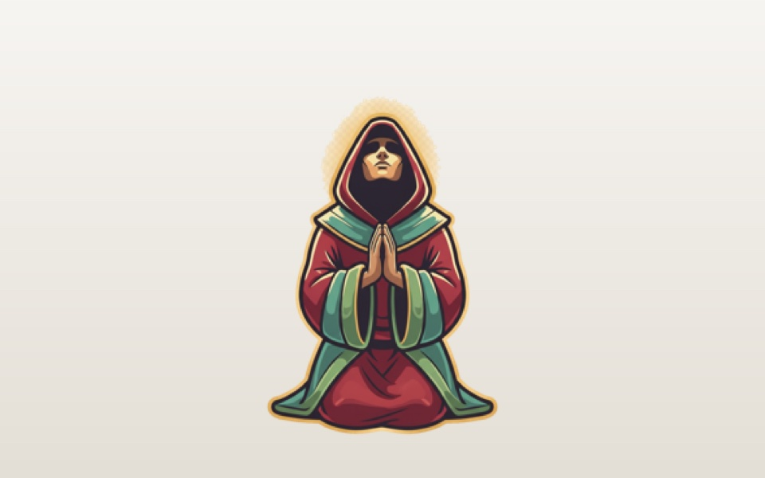

The Seeklore Universe
03A fantasy world and the things built inside it — the novels and their reader, the card game, and a slot machine set in the same pantheon.

Seeklore eReader
↗A reader that assembles the book around you as you go: tap any name for a dossier that knows only what you know, watch the fog lift off the map as regions are charted, and keep a log of every reveal — each field gated to the chapter that earns it, so nothing arrives early.

The Seeklore Card Game
↗A two-player card game where rival courts of gods contend for the worship of humankind across three domains — matter, life and spirit. Hotseat on one device or against the Machine Court, with the rules, art and full game state bundled into a single HTML file.

The Votive Wheel
↗A slot-machine game design for Seeklore. Five reels of gods, relics and sacred places sit over a map that fills as you play — charted places gather mortals, enthroned gods call their flock, and a full shrine opens the Worshipper Rite. A design mockup, not a gambling product.